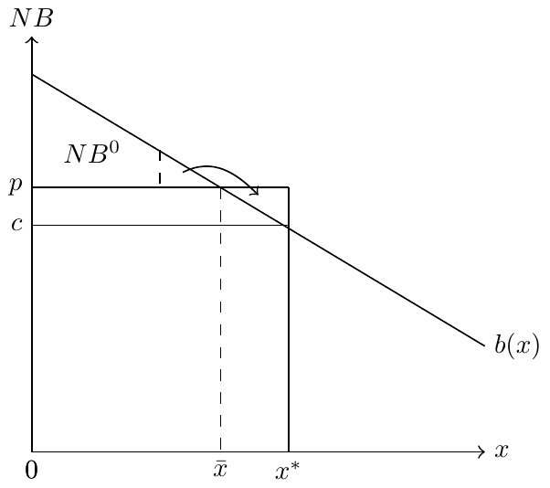

8 Agency and Financial Incentives
Physicians play a pivotal role in influencing health care decisions, acting as agents on behalf of their patients. They have a strong impact on the type of care provided to patients and whether such care aligns with the patients’ best interests. However, it is essential to recognize that various factors beyond patient interests can also influence the care delivered. Among these factors, financial incentives hold significant potential in shaping physician behavior and medical treatment choices.
In the next two chapters, our focus will be on exploring the role of financial incentives in the context of physician agency. We will delve into how these incentives can influence medical decisions and patient outcomes. Additionally, we will examine the potential impact of “other things” on care, which might include non-financial factors affecting the care provided by physicians.
8.1 Financial incentives
Now, the question arises: do financial incentives truly matter in influencing physician behavior? Empirically, the answer is a resounding, “yes.” Several studies have provided evidence supporting the significance of financial incentives in affecting medical treatment and patient health outcomes. For instance, notable research works by Gruber and Owings (1996) and Clemens and Gottlieb (2014) offer valuable insights into the relationship between physician financial incentives and specific healthcare practices.
Through these and other studies, we gain a better understanding of how financial incentives play a role in shaping healthcare decisions, making it a crucial area of investigation in health policy and economics. The question of financial incentives and physician treatment decisions is particularly important as we consider different types of payment models, such as fee-for-service payments or capitated payments. For now, let’s forgot about these things and just think about a basic model of treatment decisions in which we assume physicians care both about patient benefit and profit. We’ll consider two versions of this model: one in which the physician can set both the price and the quantity of care, and another in which prices are fixed (e.g., by a large public insurance option).
8.2 With price and quantity setting power
Setup
In this analysis, we establish the fundamental elements of the model for physician services. Let’s denote the quantity of physician services as \(x\), while the benefit derived by patients from these services is represented as \(B(x)\). Patients are required to pay a price of \(p\) for each unit of service, and the payment is received by the physicians. Simultaneously, physicians incur a cost of \(c\) for each unit of care they provide.
To understand the net benefit to patients, we use the formula \(NB(x) = B(x) - px\), which takes into account the benefit received minus the price paid. Moreover, physicians must make a crucial decision by choosing the quantity of care they provide. This decision must be such that the net benefit to patients, \(NB(x) = B(x) - px\), is greater than or equal to the patient’s outside option, denoted as \(NB^{0}\).
Solving the Model
Having established the model’s framework, we now seek to determine the optimal quantity of care that will be provided by physicians, which we represent as \(x\). This requires solving the model in two distinct steps:
- First, physicians aim to provide a minimum surplus that satisfies the patient’s preferences and keeps them in the medical care process. This surplus is reflected in Equation 8.1.
\[NB(x) = B(x) - px = NB^{0} \tag{8.1}\]
- Subsequently, we proceed by substituting the value of \(x\) obtained in the previous step into the physician’s profit function:
\[\pi = (p-c)x = B(x) - NB^{0} - cx. \tag{8.2}\]
Solving for \(x\) allows us to determine the optimal quantity of care that physicians should provide to maximize their profits while satisfying the patient’s requirements.
Even in this very general setup, we can begin to solve the model and make some theoretical predictions about quantity of care in this environment. Solving the physician’s objective function in Equation 8.2 yields \(\frac{d B(x)}{x} - c =0\). In other words, the physician sets quantity of care so that the marginal benefit of care to the patient is equal to the physician’s marginal cost. Not a revolutionary finding, but important when we compare this to the patient’s optimum. If the patient could choose \(x\) independently, they would aim to maximize their net benefit in Equation 8.1 such that \(\frac{ d B(x)}{x} - p =0\). So the patient would set marginal benefit equal to the price of care. Of course, the price of care \(p\) is the marginal cost to the patient, so both the physician and patient set marginal benefit equal to marginal cost, but they have different marginal costs and therefore different optimal choices of \(x\).
Since we’ve assumed that \(B'(x)\) is decreasing, and since it must be the case that \(p>c\) (otherwise the physician would make no positive profit), it follows that the physician’s optimal choice of \(x\) exceeds that of the patient’s. This is because \(B'(x)=c\) occurs at a point further out on the x-axis than \(B'(x)=p\). This is depicted graphically in Figure 8.1. This simple model therefore helps us understand how financial incentives, costs, and patient preferences collectively influence the decision-making process of physicians, ultimately impacting the quantity of care delivered.
8.3 With fixed prices
The two-step approach is applicable when both prices and the quantity of care are variable. However, when physicians cannot set prices (e.g., prices are fixed administratively at a certain level), we work solely based on the patient’s net benefit constraint. The constraint is still given by \(B(x) - \bar{p}x = NB^{0}\), but we replace \(p\) with \(\bar{p}\) to denote the fixed price. \(NB^{0}\) still denotes the patient’s outside option.
Why can’t we replace the net benefit constraint into the physician’s maximization problem? This is a corner solution, so standard derivatives aren’t going to work here. Instead, we rely on the patient’s net benefit constraint to find the optimal quantity of care. We therefore obtain the solution simply by rewriting the constraint, so that
\[x= \frac{B(x) - NB^{0}}{\bar{p}}. \tag{8.3}\]
How does \(x\) change if \(p\) changes? To answer this, we can totally differentiate Equation 8.3:
\[\begin{align*} b(x)\frac{\mathrm{d}x}{\mathrm{d}p} - x - p\frac{\mathrm{d}x}{\mathrm{d}p} &= 0 \\ \frac{\mathrm{d}x}{\mathrm{d}p} = \frac{-x}{p-b(x)} &< 0. \end{align*}\]
So there is a negative relationship between \(x\) and \(\bar{p}\). This means that, when the administratively set price (\(p\)) increases, we observe a decrease in the quantity of services provided. Conversely, if the price decreases, the quantity of services provided increases. Understanding the relationship between administrative price changes and healthcare utilization is crucial for policy considerations. If we aim to reduce healthcare utilization or spending, attempting to do so solely by cutting payments might not be effective. The comparative statics analysis demonstrates that changes in administratively set prices have direct implications for the quantity of services provided by physicians.
References
Clemens, Jeffrey, and Joshua D Gottlieb. 2014. “Do Physicians’ Financial Incentives Affect Medical Treatment and Patient Health?” American Economic Review 104 (4): 1320–49.
Gruber, Jonathan, and Maria Owings. 1996. “Physician Financial Incentives and Cesarean Section Delivery.” The RAND Journal of Economics 27 (1): 99–123.